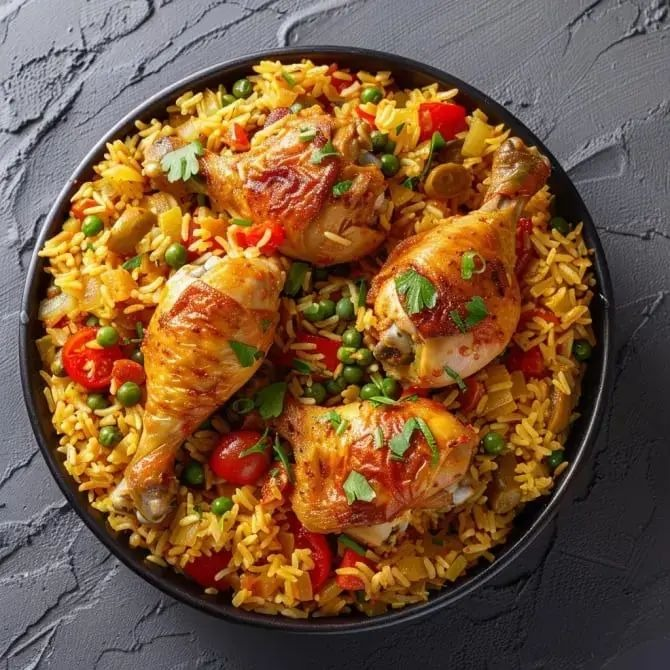

Galinhada
Prato tradicional do Oeste, a galinhada combina arroz e frango cozidos com temperos típicos da região, resultando em uma refeição completa e saborosa.

Ingredientes
- 1 kg de frango em pedaços
- 2 xícaras de arroz
- 1 cebola picada
- 2 dentes de alho picados
- 2 tomates picados
- 1 pimentão picado
- Sal e pimenta a gosto
- 4 xícaras de água
Modo de Preparo
- Refogue cebola e alho em uma panela grande.
- Adicione o frango e doure levemente.
- Junte os tomates, pimentão, arroz e água. Tempere com sal e pimenta.
- Cozinhe em fogo baixo até o arroz absorver a água e o frango ficar macio.
Dica do Chef: Sirva com cheiro-verde picado por cima para realçar o sabor e o aroma.